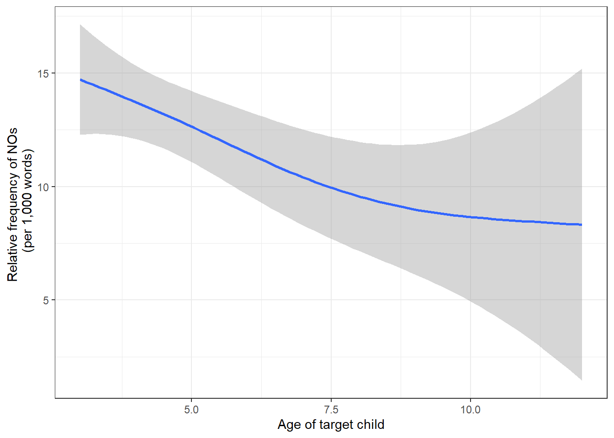
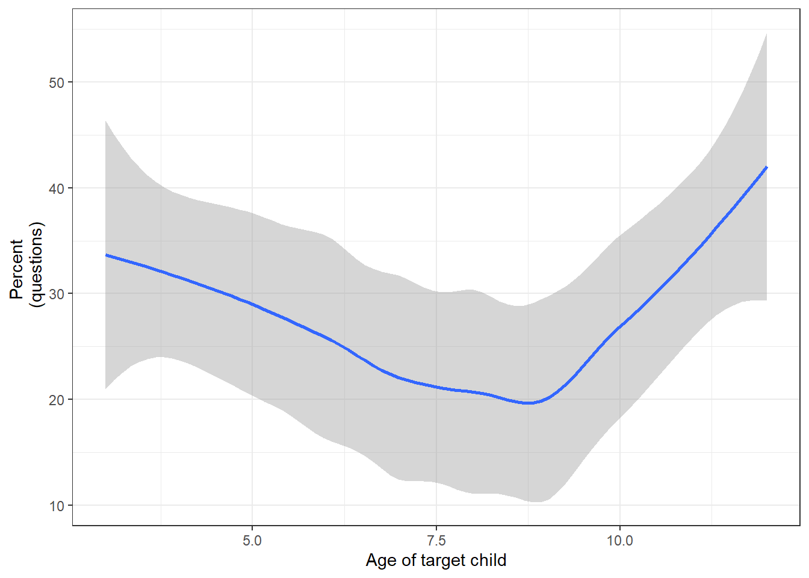
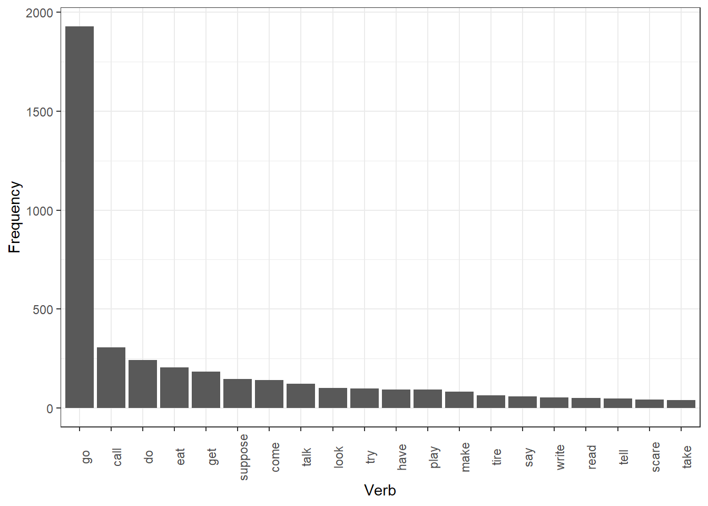
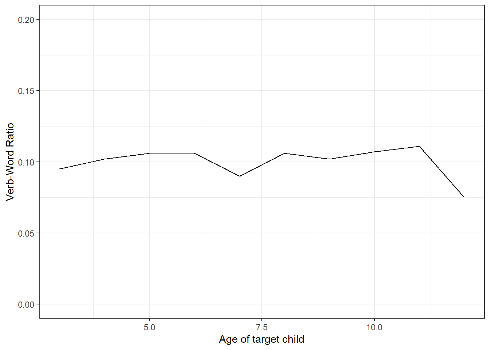
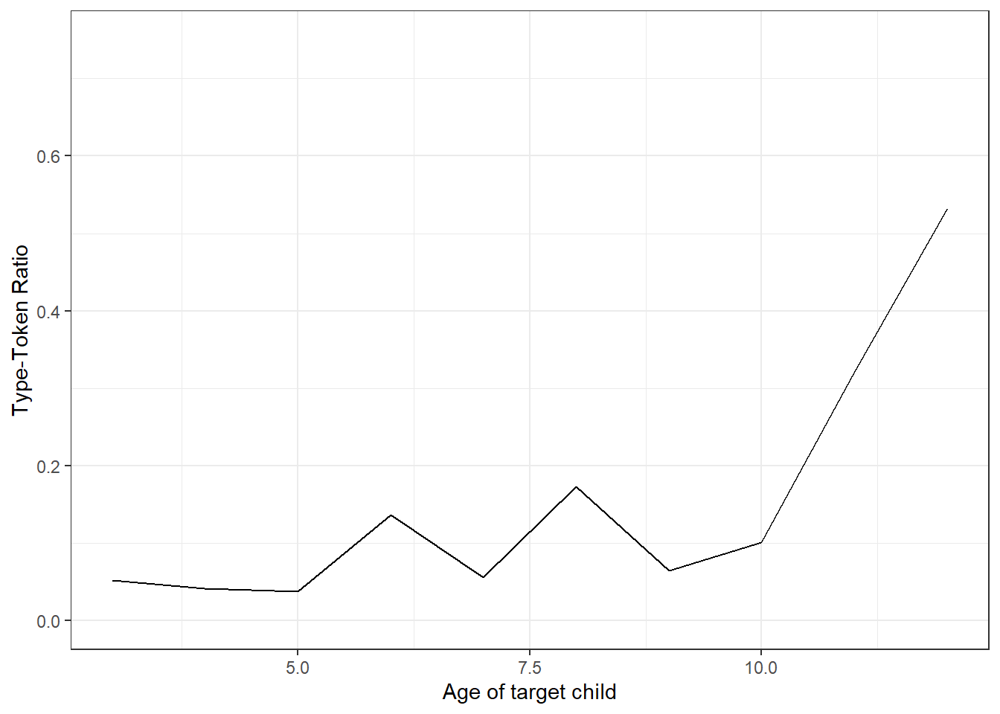
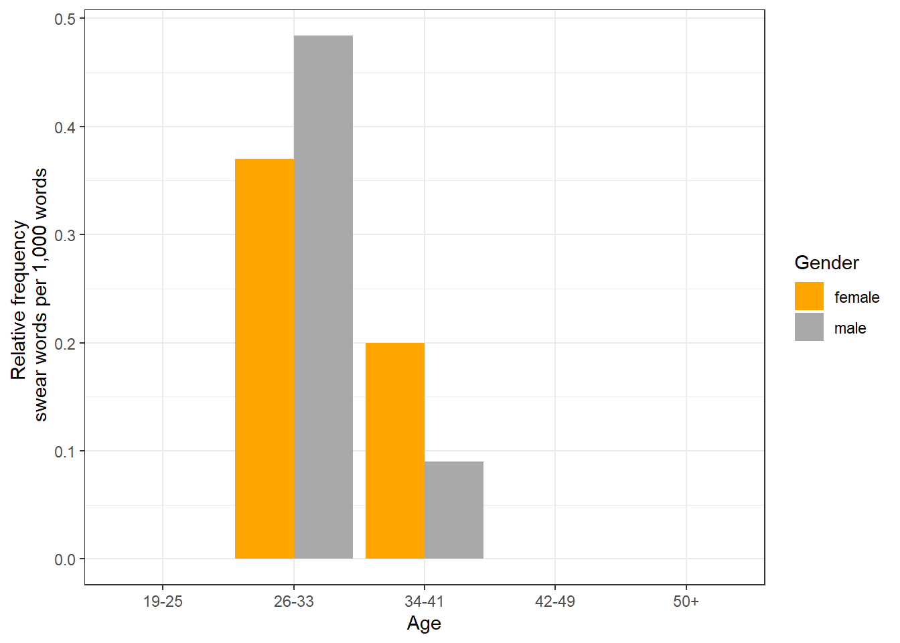

Corpus Linguistics with R
Martin Schweinberger
2023-02-08

Introduction
This section presents different case studies or use cases that highlight how to do corpus-based analyses by implementing procedures shown in other LADAL tutorials. In other words, here we aim to show how the content of other tutorials can be put into practice. However, please keep in mind that the case studies merely aim to exemplify ways in which R can be used in language-based research - rather than providing detailed procedures on how to do corpus-based research.
The entire R Notebook for the tutorial can be downloaded here.
If you want to render the R Notebook on your machine, i.e. knitting the
document to html or a pdf, you need to make sure that you have R and
RStudio installed and you also need to download the bibliography
file and store it in the same folder where you store the
Rmd file.

Click
this link to open an interactive version of this tutorial on
MyBinder.org.
This interactive Jupyter notebook allows
you to execute code yourself and you can also change and edit the
notebook, e.g. you can change code and upload your own data.
What is Corpus Linguistics?

Corpus Linguistics (CL) can be considered both a methodology and a field of study. The defining feature of corpus linguistics research is the use of corpora (plural of corpus) to understand language (Biber, Conrad, and Reppen 1998). A corpus is a collection of machine-readable (electronic) texts and CL emerged in the 1960s, but only really expanded since the 1990s when the use of computers and software made it possible for researchers to analyze corpora efficiently (Lindquist 2009).
The texts represented in a corpus can be very different in nature and reflect many different uses of language - texts in corpora can, for example, represent news paper articles, parliamentary debates, dinner conversations, mothers talking to children, interviews, student essays, letters, lectures, etc. (McEnery and Wilson 2001).
Corpora can also be very different. Monitor corpora, for example, aim to represent the whole variety of contexts in which people speaking a particular language, e.g. English, use that language. Specialized corpora, however, try to reflect language use in a specific context or register, for example the use of English in Academia or in business transactions or, for instance, how parents talk with children.

In addition, we can differentiate between diachronic (or historical) and synchronic corpora: diachronic corpora contain language samples collected across different points in time so that changes in the use of language can be studied. Synchronic corpora represent language samples collected at one point (or period) in time and aim to reflect the state of language use during that one period (monitor corpora are typically synchronic).
In addition to providing examples of actual, naturally occurring language use, corpora offer frequency and probability information. In other words, corpora provide information of how frequent certain phenomena or linguistic variants are compared to other phenomena and which factors condition their use (Gries 2009).
The use of corpora has increased dramatically as corpora offer a relatively cheap, comparatively easy, flexible, and externally valid method for analyzing language use and testing hypotheses about linguistic behavior.
Notes on loading corpus data into R
Before we continue with the case studies, it is important to see how what we will be doing in the case studies differs from what you will most likely do if you conduct corpus-based research.
If a corpus is not accessed via a web application, corpora (collections of electronic language samples) typically - almost always - come in the form of text or audio files in a folder. That is, when using corpora, researchers typically download that corpus from a repository (for instance a website) or from some other storage media (for instance a CD, USB-stick, etc.). This means that non-web-based corpora are typically somewhere on a researcher’s computer where they can then be loaded into some software, e.g. AntConc.
For the present tutorial, however, we will simply load data that is available via the LADAL GitHub repository. Nonetheless, it is important to know how to load corpus data into R - which is why I will show this below.
Loading corpus data into R consists of two steps:
create a list of paths of the corpus files
loop over these paths and load the data in the files identified by the paths.
To create a list of corpus files, you could use the code chunk below (the code chunk assumes that the corpus data is in a folder called Corpus in the data sub-folder of your Rproject folder).
corpusfiles <- list.files(here::here("data/Corpus"), # path to the corpus data
# file types you want to analyze, e.g. txt-files
pattern = ".*.txt",
# full paths - not just the names of the files
full.names = T) You can then use the sapply function to loop over the
paths and load the data int R using e.g. the scan function
as shown below. In addition to loading the file content, we also paste
all the content together using the paste0 function and
remove superfluous white spaces using the str_squish
function from the stringr package.
corpus <- sapply(corpusfiles, function(x){
x <- scan(x,
what = "char",
sep = "",
quote = "",
quiet = T,
skipNul = T)
x <- paste0(x, sep = " ", collapse = " ")
x <- stringr::str_squish(x)
})Once you have loaded your data into R, you can then continue with processing and transforming the data according to your needs.
NOTE
There are many different ways in which you can load
text data into R. What I have shown above is just one way of doing this.
However, I found this procedure to load text data very useful. In the
case study which exemplifies how you can analyze sociolinguistic
variation, we show how you can load text data in a very similar yet
slightly different way (the tidyverse style of loading text data).
Preparation and session set up
The case studies shown below are based on R. Thus, you should already be familiar with R and RStudio. If you have not installed R or are new to it, you will find an introduction to and more information how to use R here. In addition, it is recommended to be familiar with regular expressions (this tutorials contains an overview of regular expressions that are used in this tutorial).
You should also have downloaded and installed R and RStudio. This tutorial contains links to detailed how-tos on how to download and install R and RStudio.
For this case study, we need to install certain packages from an R library so that the scripts shown below are executed without errors. Before turning to the code below, please install the packages by running the code below this paragraph. If you have already installed the packages mentioned below, then you can skip ahead ignore this section. To install the necessary packages, simply run the following code - it may take some time (between 1 and 5 minutes to install all of the libraries so you do not need to worry if it takes some time).
# installing packages
install.packages("dplyr")
install.packages("stringr")
install.packages("ggplot2")
install.packages("flextable")
install.packages("quanteda")
install.packages("cfa")
# install klippy for copy-to-clipboard button in code chunks
install.packages("remotes")
remotes::install_github("rlesur/klippy")# set options
options(stringsAsFactors = F) # no automatic data transformation
options("scipen" = 100, "digits" = 4) # suppress math annotation
# load packages
library(dplyr)
library(stringr)
library(ggplot2)
library(flextable)
library(quanteda)
library(cfa)
# activate klippy for copy-to-clipboard button
klippy::klippy()Once you have installed RStudio and initiated the session by executing the code shown above, you are good to go.
Studying First Language Acquisiton
This case study shows how you can use and analyze the Child Language Data Exchange System (CHILDES) (MacWhinney 1996) data base using R to show case how you can use it in your own studies. This section of the tutorials consists of two parts:
in the first part, we load, process, and transform the data so that we have all pieces of information in a tidy table format.
in the second part, we perform selected case studies showing how to extract information form the table we have created out of the corpus files.
The first part is necessary because the corpus data comes in the CHILDES comes in a special format that makes it somewhat tedious to extract information from it. Thus, we want to separate all information in different columns. In the end, the corpus data should have the following format:
id | file | childage | child | speaker | utterance | tagged | comment |
|---|---|---|---|---|---|---|---|
1 | aab | 4;6 | ben | MOT | How are you ? | How|WH are|BE you|PN ?|PC | |
2 | aab | 4;6 | ben | MOT | Ben ? | Ben|NNP ?|PC | |
3 | aab | 4;6 | ben | ben | Okay | Okay|RB | |
4 | aab | 4;6 | ben | MOT | Are you hungry ? | Are|BE you|PN hungry|JJ ?|PC | |
5 | aab | 4;6 | ben | ben | No | No|NG | shakes head |
6 | aab | 4;6 | ben | MOT | Sure ? | Sure|RB ?|PC |
So, after the processing, the data should contain each utterance in a separate line and each line should also contain information about the speaker and the file.
Using CHILDES data
The Child Language Data Exchange System (CHILDES) (MacWhinney 1996) is a browsable data base which provides corpora consisting of transcripts of conversations with children. CHILDES was established in 1984 by Brian MacWhinney and Catherine Snow and it represents the central repository for data of first language acquisition. Its earliest transcripts date from the 1960s, and it now has contents (transcripts, audio, and video) in 26 languages from 130 different corpora, all of which are publicly available worldwide.

CHILDES is the child language part of the TalkBank system which is a system for sharing and studying conversational interactions.
To download corpora from CHILDES:
Go to the CHILDES website - the landing page looks like the website shown in the image to the right. For the present tutorial, the only relevant part of that website is section labeled Database which contains the links to the different CHILDS corpora that you can download fro free.
In the section called Database click on Index to Corpora which will take you to a table which contains links to different kinds of corpora - all containing transcripts of children’s speech. The types of corpora available cover many different language, including monolingual and bilingual children, children with speech disorders, transcripts of frog stories, etc.

To download a corpus, click on one of the section, e.g. on Eng-NA which stands for English recorded in North America (but you can, of course, also download other CHILDES corpora), and then scroll down to the corpus you are interested in and click on it, e.g. scroll down to and click on HSLLD.
Click on Download transcripts and then download and store the zip-folder somewhere on your computer.
Next, unzip the zip-file and store the resulting unzipped corpus in the data sub-folder in your Rproject folder.
Once you have downloaded, stored the data on your computer, and unzipped it, you are good to go and you can now access and analyze data from CHILDES.
HSLLD corpus
For this case study, we will use data from the Home-School Study of Language and Literacy Development corpus (HSLLD) which part of the CHILDES data base. The Home-School Study of Language and Literacy Development began in 1987 under the leadership of Patton Tabors and with Catherine E. Snow and David K. Dickinson as primary investigators. The original purpose of the HSLLD was to investigate the social prerequisites to literacy success.
The initial number of participants was 83 American English speaking, racially diverse, preschool age children from low-income families growing up in or around Boston, Massachusetts. Seventy-four of these children were still participating at age 5. The sample consists of 38 girls and 36 boys. Forty-seven children were Caucasian, 16 were African American, six were of Hispanic origin, and five were biracial.
Children were visited once a year in their home from age 3 – 5 and then again when they were in 2nd and 4th grade. Each visit lasted between one and three hours. Home visits consisted of a number of different tasks depending on the year. An outline of the different tasks for each visit is presented below.
Activities during Home Visit 1 (HV1): Book reading (BR), Elicited report (ER), Mealtime (MT), Toy Play (TP)
Activities during Home Visit 2 (HV2): Book reading (BR), Elicited report (ER), Mealtime (MT), Toy Play (TP)
Activities during Home Visit 3 (HV3): Book reading (BR), Elicited report (ER), Experimental task (ET), Mealtime (MT), Reading (RE), Toy play (TP)
Activities during Home Visit 5 (HV5): Book reading (BR), Letter writing (LW), Mealtime (MT)
Activities during Home Visit 7 (HV7): Experimental task (ET), Letter writing (LW), Mother definitions (MD), Mealtime (MT)
Data processing
We now load the data and inspect its structure using the
str function - as the HSLLD has many files, we will only
check the first 3.
hslld <- readRDS(url("https://slcladal.github.io/data/hslld.rda"))
# If you have already downloaded the data file to data/hslld.rda you can also load it locally
# hslld <- readRDS("data/hslld.rda")
# inspect
str(hslld[1:3])## List of 3
## $ D:\Uni\UiT\Workshops\RCHILDES\data\HSLLD/HV1/BR/acebr1.cha : chr [1:1931] "@UTF8" "@PID:" "11312/c-00034768-1" "@Begin" ...
## $ D:\Uni\UiT\Workshops\RCHILDES\data\HSLLD/HV1/BR/acebr1pt2.cha: chr [1:21] "@UTF8" "@PID:" "11312/a-00012630-1" "@Begin" ...
## $ D:\Uni\UiT\Workshops\RCHILDES\data\HSLLD/HV1/BR/admbr1.cha : chr [1:1369] "@UTF8" "@PID:" "11312/c-00034769-1" "@Begin" ...We continue and split the data up into files. The sapply
function loops each element in the hslld object and
performs specified actions on the (here, loading the content via the
scan function, getting rid of white spaces and splitting
the files when it finds the following sequences *ABC1: or
%ABC:)
# create version of corpus fit for concordancing
corpus <- sapply(hslld, function(x) {
# clean data
x <- stringr::str_trim(x, side = "both") # remove superfluous white spaces at the edges of strings
x <- stringr::str_squish(x) # remove superfluous white spaces within strings
x <- paste0(x, collapse = " ") # paste all utterances in a file together
# split files into individual utterances
x <- strsplit(gsub("([%|*][a-z|A-Z]{2,4}[0-9]{0,1}:)", "~~~\\1", x), "~~~")
})
# inspect results
str(corpus[1:3])## List of 3
## $ D:\Uni\UiT\Workshops\RCHILDES\data\HSLLD/HV1/BR/acebr1.cha : chr [1:793] "@UTF8 @PID: 11312/c-00034768-1 @Begin @Languages: eng @Participants: CHI Target_Child , MOT Mother , EX1 Invest"| __truncated__ "*MOT: okay her favorite books (.) I don't read the whole stories they're too long . " "%mor: co|okay det:poss|her adj|favorite n|book-PL pro:sub|I mod|do~neg|not v|read&ZERO det:art|the adj|whole n"| __truncated__ "%gra: 1|4|COM 2|4|DET 3|4|MOD 4|0|INCROOT 5|8|SUBJ 6|8|AUX 7|6|NEG 8|4|CMOD 9|11|DET 10|11|MOD 11|8|OBJ 12|13|"| __truncated__ ...
## $ D:\Uni\UiT\Workshops\RCHILDES\data\HSLLD/HV1/BR/acebr1pt2.cha: chr "@UTF8 @PID: 11312/a-00012630-1 @Begin @Languages: eng @Participants: CHI Target_Child, INV Investigator @ID: en"| __truncated__
## $ D:\Uni\UiT\Workshops\RCHILDES\data\HSLLD/HV1/BR/admbr1.cha : chr [1:517] "@UTF8 @PID: 11312/c-00034769-1 @Begin @Languages: eng @Participants: CHI Target_Child , MOT Mother , UNC Uncle "| __truncated__ "*MOT: gonna read this one too which one do you want me to read first ? " "%mor: part|go-PRESP~inf|to v|read&ZERO det:dem|this pro:indef|one adv|too pro:rel|which det:num|one v|do pro:p"| __truncated__ "%gra: 1|0|INCROOT 2|3|INF 3|1|COMP 4|5|DET 5|3|OBJ 6|3|JCT 7|9|LINK 8|9|QUANT 9|1|CJCT 10|11|SUBJ 11|9|COMP 12"| __truncated__ ...We have now loaded the files into R, but the format is not yet structured in a way that we can use it - remember: we want the data to be in a tabular format.
Extract file information
Now, we extract information about the recording, e.g., the
participants, the age of the child, the date of the recording etc. For
this, we extract the first element of each file (because this first
element contains all the relevant information bout the recording). To do
this, we again use the sapply function (which is our
looping function) and then tell R that it shall only retain the first
element of each element (x <- x[1]).
# extract file info for each file
fileinfo <- sapply(corpus, function(x){
# extract first element of each corpus file because this contains the file info
x <- x[1]
})
#inspect
fileinfo[1:3]## D:\\Uni\\UiT\\Workshops\\RCHILDES\\data\\HSLLD/HV1/BR/acebr1.cha
## "@UTF8 @PID: 11312/c-00034768-1 @Begin @Languages: eng @Participants: CHI Target_Child , MOT Mother , EX1 Investigator @ID: eng|HSLLD|CHI|3;07.08|female|||Target_Child||| @ID: eng|HSLLD|MOT||female|||Mother|14|| @ID: eng|HSLLD|EX1|||||Investigator||| @Birth of CHI: 11-DEC-1984 @Media: acebr1, audio, unlinked @Comment: SES of Mot is lower @Date: 19-JUL-1988 @Location: Boston , MA USA @Situation: Home Visit 1; took place in kitchen; Chi and Mot sat next to each other in separate chairs , television is running; 7pm. @Activities: Book Reading 1 (The Very Hungry Caterpillar) @Bg: bookreading @Types: long, book, TD "
## D:\\Uni\\UiT\\Workshops\\RCHILDES\\data\\HSLLD/HV1/BR/acebr1pt2.cha
## "@UTF8 @PID: 11312/a-00012630-1 @Begin @Languages: eng @Participants: CHI Target_Child, INV Investigator @ID: eng|HSLLD|CHI|||||Target_Child||| @ID: eng|HSLLD|INV|||||Investigator||| @Media: acebr1pt2, audio, notrans @Comment: This is a dummy file to permit playback from the TalkBank browser. Please use the slider at the left to control media playback. @End"
## D:\\Uni\\UiT\\Workshops\\RCHILDES\\data\\HSLLD/HV1/BR/admbr1.cha
## "@UTF8 @PID: 11312/c-00034769-1 @Begin @Languages: eng @Participants: CHI Target_Child , MOT Mother , UNC Uncle Relative, EX1 Investigator @ID: eng|HSLLD|CHI|4;01.09|male|||Target_Child||| @ID: eng|HSLLD|MOT||female|||Mother|12+|| @ID: eng|HSLLD|UNC|||||Relative||| @ID: eng|HSLLD|EX1|||||Investigator||| @Birth of CHI: 05-MAY-1985 @Media: admbr1, audio, unlinked @Comment: SES of Mot is lower @Date: 14-JUN-1989 @Location: Boston , MA USA @Situation: Home Visit 1 @Activities: Book Reading 1 The Very Hungry Caterpillar @Bg: bookreading @Types: long, book, TD "Now, we have one element for each file that contains all the relevant information about the file, like when the recording took place, how old the target child was, how was present during the recording etc.
Extract file content
Now, we extract the raw content from which we will extract the
speaker, the utterance, the pos-tagged utterance, and any comments.Here,
we loop over the corpus object with the sapply
function and we remove the first element in each list (and we retain the
second to last element of each element
(x <- x[2:length(x)])), then we paste everything else
together using the paste0 function and then, we split the
whole conversation into utterances that start with a speaker id
(e.g. *MOT:). The latter is done by the sequence
stringr::str_split(stringr::str_replace_all(x, "(\\*[A-Z])", "~~~\\1"), "~~~").
content <- sapply(corpus, function(x){
x <- x[2:length(x)]
x <- paste0(x, collapse = " ")
x <- stringr::str_split(stringr::str_replace_all(x, "(\\*[A-Z])", "~~~\\1"), "~~~")
})
# inspect data
content[[1]][1:6]## [1] ""
## [2] "*MOT: okay her favorite books (.) I don't read the whole stories they're too long . %mor: co|okay det:poss|her adj|favorite n|book-PL pro:sub|I mod|do~neg|not v|read&ZERO det:art|the adj|whole n|story-PL pro:sub|they~cop|be&PRES adv|too adj|long . %gra: 1|4|COM 2|4|DET 3|4|MOD 4|0|INCROOT 5|8|SUBJ 6|8|AUX 7|6|NEG 8|4|CMOD 9|11|DET 10|11|MOD 11|8|OBJ 12|13|SUBJ 13|11|CMOD 14|15|JCT 15|13|PRED 16|4|PUNCT %tim: 37:16 "
## [3] "*MOT: I give my own version . %mor: pro:sub|I v|give det:poss|my adj|own n|version . %gra: 1|2|SUBJ 2|0|ROOT 3|5|DET 4|5|MOD 5|2|OBJ 6|2|PUNCT "
## [4] "*EX1: okay . %mor: co|okay . %gra: 1|0|INCROOT 2|1|PUNCT "
## [5] "*EX1: that's fine . %mor: pro:dem|that~cop|be&3S adj|fine . %gra: 1|2|SUBJ 2|0|ROOT 3|2|PRED 4|2|PUNCT "
## [6] "*EX1: whatever you usually do . %mor: pro:int|whatever pro:per|you adv|usual&dadj-LY v|do . %gra: 1|4|LINK 2|4|SUBJ 3|4|JCT 4|0|ROOT 5|4|PUNCT "The data now consists of utterances but also the pos-tagged utterances and any comments. However, we use this form of the data to extract the clean utterances, the pos-tagged utterances and the comments and store them in different columns.
Extract information
Now, we extract how many elements (or utterances) there are in each
file by looping over the content object and extracting the
number of elements within each element of the content
object by using the lenght function.
elements <- sapply(content, function(x){
x <- length(x)
})
# inspect
head(elements)## D:\\Uni\\UiT\\Workshops\\RCHILDES\\data\\HSLLD/HV1/BR/acebr1.cha
## 261
## D:\\Uni\\UiT\\Workshops\\RCHILDES\\data\\HSLLD/HV1/BR/acebr1pt2.cha
## 1
## D:\\Uni\\UiT\\Workshops\\RCHILDES\\data\\HSLLD/HV1/BR/admbr1.cha
## 178
## D:\\Uni\\UiT\\Workshops\\RCHILDES\\data\\HSLLD/HV1/BR/aimbr1.cha
## 346
## D:\\Uni\\UiT\\Workshops\\RCHILDES\\data\\HSLLD/HV1/BR/alibr1.cha
## 435
## D:\\Uni\\UiT\\Workshops\\RCHILDES\\data\\HSLLD/HV1/BR/allbr1.cha
## 135Generate table
We now have the file names, the metadata for each file, and the
content of each file (that is split into utterances). We use this
information to generate a first table which holds the file name in one
column, the file information in one column, and the raw file content in
another column. To combine these three pieces of information though, we
need to repeat the file names and the file information as often as there
are utterances in each file. We perform this repetition using the
rep function. Once we have as many file names and file
information as there are utterances in each file, we can combine these
three vectors into a table using the data.frame
function.
files <- rep(names(elements), elements)
fileinfo <- rep(fileinfo, elements)
rawcontent <- as.vector(unlist(content))
chitb <- data.frame(1:length(rawcontent),
files,
fileinfo,
rawcontent)The table in its current form is shown below. We can see that the table has three columns: the first column holds the path to each file, the second contains the file information, and the third the utterances.
X1.length.rawcontent. | files | fileinfo | rawcontent |
|---|---|---|---|
1 | D:\Uni\UiT\Workshops\RCHILDES\data\HSLLD/HV1/BR/acebr1.cha | @UTF8 @PID: 11312/c-00034768-1 @Begin @Languages: eng @Participants: CHI Target_Child , MOT Mother , EX1 Investigator @ID: eng|HSLLD|CHI|3;07.08|female|||Target_Child||| @ID: eng|HSLLD|MOT||female|||Mother|14|| @ID: eng|HSLLD|EX1|||||Investigator||| @Birth of CHI: 11-DEC-1984 @Media: acebr1, audio, unlinked @Comment: SES of Mot is lower @Date: 19-JUL-1988 @Location: Boston , MA USA @Situation: Home Visit 1; took place in kitchen; Chi and Mot sat next to each other in separate chairs , television is running; 7pm. @Activities: Book Reading 1 (The Very Hungry Caterpillar) @Bg: bookreading @Types: long, book, TD | |
2 | D:\Uni\UiT\Workshops\RCHILDES\data\HSLLD/HV1/BR/acebr1.cha | @UTF8 @PID: 11312/c-00034768-1 @Begin @Languages: eng @Participants: CHI Target_Child , MOT Mother , EX1 Investigator @ID: eng|HSLLD|CHI|3;07.08|female|||Target_Child||| @ID: eng|HSLLD|MOT||female|||Mother|14|| @ID: eng|HSLLD|EX1|||||Investigator||| @Birth of CHI: 11-DEC-1984 @Media: acebr1, audio, unlinked @Comment: SES of Mot is lower @Date: 19-JUL-1988 @Location: Boston , MA USA @Situation: Home Visit 1; took place in kitchen; Chi and Mot sat next to each other in separate chairs , television is running; 7pm. @Activities: Book Reading 1 (The Very Hungry Caterpillar) @Bg: bookreading @Types: long, book, TD | *MOT: okay her favorite books (.) I don't read the whole stories they're too long . %mor: co|okay det:poss|her adj|favorite n|book-PL pro:sub|I mod|do~neg|not v|read&ZERO det:art|the adj|whole n|story-PL pro:sub|they~cop|be&PRES adv|too adj|long . %gra: 1|4|COM 2|4|DET 3|4|MOD 4|0|INCROOT 5|8|SUBJ 6|8|AUX 7|6|NEG 8|4|CMOD 9|11|DET 10|11|MOD 11|8|OBJ 12|13|SUBJ 13|11|CMOD 14|15|JCT 15|13|PRED 16|4|PUNCT %tim: 37:16 |
3 | D:\Uni\UiT\Workshops\RCHILDES\data\HSLLD/HV1/BR/acebr1.cha | @UTF8 @PID: 11312/c-00034768-1 @Begin @Languages: eng @Participants: CHI Target_Child , MOT Mother , EX1 Investigator @ID: eng|HSLLD|CHI|3;07.08|female|||Target_Child||| @ID: eng|HSLLD|MOT||female|||Mother|14|| @ID: eng|HSLLD|EX1|||||Investigator||| @Birth of CHI: 11-DEC-1984 @Media: acebr1, audio, unlinked @Comment: SES of Mot is lower @Date: 19-JUL-1988 @Location: Boston , MA USA @Situation: Home Visit 1; took place in kitchen; Chi and Mot sat next to each other in separate chairs , television is running; 7pm. @Activities: Book Reading 1 (The Very Hungry Caterpillar) @Bg: bookreading @Types: long, book, TD | *MOT: I give my own version . %mor: pro:sub|I v|give det:poss|my adj|own n|version . %gra: 1|2|SUBJ 2|0|ROOT 3|5|DET 4|5|MOD 5|2|OBJ 6|2|PUNCT |
Process table
We can now use the information in the two last columns to extract
specific pieces of information from the data (which we will store in
additional columns that we add to the table). But first, we rename the
id column (which is simply an index of each utterance)
using the rename function from the dplyr
package. Then, we clean the file name column (called files)
so that it only contains the name of the file, so we remove the rest of
the path information that we do not need anymore. We do this by using
the mutate function from the dplyr package
(which changes columns or creates new columns). Within the
mutate function, we use the gsub function
which substitutes something with something else: here the full path is
replaced with on that part of the path that contains the file name. The
gsub function has the following form
gsub(*look for pattern*, *replacement of the pattern*, object)
This means that the gsub function needs an object and in
that object it looks for a pattern and then replaces instances f that
pattern with something.
In our case, that what we look for is the file name which is located
between the symbol / and the file ending
(.cha). So, we extract everything that comes between a
/ and a .cha in the path and keep that what is
between the / and a .cha in R’s memory (this
is done by placing something in round brackets in a regular expression).
Then, we paste that what we have extracted back (and which is stored in
memory) by using the \\1 which grabs the first element that
is in memory and puts it into the replace with part of the
gsub function.
hslld <- chitb %>%
# rename id column
dplyr::rename(id = colnames(chitb)[1]) %>%
# clean file names
dplyr::mutate(files = gsub(".*/(.*?).cha", "\\1", files))Let’s have a look at the data.
id | files | fileinfo | rawcontent |
|---|---|---|---|
1 | acebr1 | @UTF8 @PID: 11312/c-00034768-1 @Begin @Languages: eng @Participants: CHI Target_Child , MOT Mother , EX1 Investigator @ID: eng|HSLLD|CHI|3;07.08|female|||Target_Child||| @ID: eng|HSLLD|MOT||female|||Mother|14|| @ID: eng|HSLLD|EX1|||||Investigator||| @Birth of CHI: 11-DEC-1984 @Media: acebr1, audio, unlinked @Comment: SES of Mot is lower @Date: 19-JUL-1988 @Location: Boston , MA USA @Situation: Home Visit 1; took place in kitchen; Chi and Mot sat next to each other in separate chairs , television is running; 7pm. @Activities: Book Reading 1 (The Very Hungry Caterpillar) @Bg: bookreading @Types: long, book, TD | |
2 | acebr1 | @UTF8 @PID: 11312/c-00034768-1 @Begin @Languages: eng @Participants: CHI Target_Child , MOT Mother , EX1 Investigator @ID: eng|HSLLD|CHI|3;07.08|female|||Target_Child||| @ID: eng|HSLLD|MOT||female|||Mother|14|| @ID: eng|HSLLD|EX1|||||Investigator||| @Birth of CHI: 11-DEC-1984 @Media: acebr1, audio, unlinked @Comment: SES of Mot is lower @Date: 19-JUL-1988 @Location: Boston , MA USA @Situation: Home Visit 1; took place in kitchen; Chi and Mot sat next to each other in separate chairs , television is running; 7pm. @Activities: Book Reading 1 (The Very Hungry Caterpillar) @Bg: bookreading @Types: long, book, TD | *MOT: okay her favorite books (.) I don't read the whole stories they're too long . %mor: co|okay det:poss|her adj|favorite n|book-PL pro:sub|I mod|do~neg|not v|read&ZERO det:art|the adj|whole n|story-PL pro:sub|they~cop|be&PRES adv|too adj|long . %gra: 1|4|COM 2|4|DET 3|4|MOD 4|0|INCROOT 5|8|SUBJ 6|8|AUX 7|6|NEG 8|4|CMOD 9|11|DET 10|11|MOD 11|8|OBJ 12|13|SUBJ 13|11|CMOD 14|15|JCT 15|13|PRED 16|4|PUNCT %tim: 37:16 |
3 | acebr1 | @UTF8 @PID: 11312/c-00034768-1 @Begin @Languages: eng @Participants: CHI Target_Child , MOT Mother , EX1 Investigator @ID: eng|HSLLD|CHI|3;07.08|female|||Target_Child||| @ID: eng|HSLLD|MOT||female|||Mother|14|| @ID: eng|HSLLD|EX1|||||Investigator||| @Birth of CHI: 11-DEC-1984 @Media: acebr1, audio, unlinked @Comment: SES of Mot is lower @Date: 19-JUL-1988 @Location: Boston , MA USA @Situation: Home Visit 1; took place in kitchen; Chi and Mot sat next to each other in separate chairs , television is running; 7pm. @Activities: Book Reading 1 (The Very Hungry Caterpillar) @Bg: bookreading @Types: long, book, TD | *MOT: I give my own version . %mor: pro:sub|I v|give det:poss|my adj|own n|version . %gra: 1|2|SUBJ 2|0|ROOT 3|5|DET 4|5|MOD 5|2|OBJ 6|2|PUNCT |
4 | acebr1 | @UTF8 @PID: 11312/c-00034768-1 @Begin @Languages: eng @Participants: CHI Target_Child , MOT Mother , EX1 Investigator @ID: eng|HSLLD|CHI|3;07.08|female|||Target_Child||| @ID: eng|HSLLD|MOT||female|||Mother|14|| @ID: eng|HSLLD|EX1|||||Investigator||| @Birth of CHI: 11-DEC-1984 @Media: acebr1, audio, unlinked @Comment: SES of Mot is lower @Date: 19-JUL-1988 @Location: Boston , MA USA @Situation: Home Visit 1; took place in kitchen; Chi and Mot sat next to each other in separate chairs , television is running; 7pm. @Activities: Book Reading 1 (The Very Hungry Caterpillar) @Bg: bookreading @Types: long, book, TD | *EX1: okay . %mor: co|okay . %gra: 1|0|INCROOT 2|1|PUNCT |
5 | acebr1 | @UTF8 @PID: 11312/c-00034768-1 @Begin @Languages: eng @Participants: CHI Target_Child , MOT Mother , EX1 Investigator @ID: eng|HSLLD|CHI|3;07.08|female|||Target_Child||| @ID: eng|HSLLD|MOT||female|||Mother|14|| @ID: eng|HSLLD|EX1|||||Investigator||| @Birth of CHI: 11-DEC-1984 @Media: acebr1, audio, unlinked @Comment: SES of Mot is lower @Date: 19-JUL-1988 @Location: Boston , MA USA @Situation: Home Visit 1; took place in kitchen; Chi and Mot sat next to each other in separate chairs , television is running; 7pm. @Activities: Book Reading 1 (The Very Hungry Caterpillar) @Bg: bookreading @Types: long, book, TD | *EX1: that's fine . %mor: pro:dem|that~cop|be&3S adj|fine . %gra: 1|2|SUBJ 2|0|ROOT 3|2|PRED 4|2|PUNCT |
6 | acebr1 | @UTF8 @PID: 11312/c-00034768-1 @Begin @Languages: eng @Participants: CHI Target_Child , MOT Mother , EX1 Investigator @ID: eng|HSLLD|CHI|3;07.08|female|||Target_Child||| @ID: eng|HSLLD|MOT||female|||Mother|14|| @ID: eng|HSLLD|EX1|||||Investigator||| @Birth of CHI: 11-DEC-1984 @Media: acebr1, audio, unlinked @Comment: SES of Mot is lower @Date: 19-JUL-1988 @Location: Boston , MA USA @Situation: Home Visit 1; took place in kitchen; Chi and Mot sat next to each other in separate chairs , television is running; 7pm. @Activities: Book Reading 1 (The Very Hungry Caterpillar) @Bg: bookreading @Types: long, book, TD | *EX1: whatever you usually do . %mor: pro:int|whatever pro:per|you adv|usual&dadj-LY v|do . %gra: 1|4|LINK 2|4|SUBJ 3|4|JCT 4|0|ROOT 5|4|PUNCT |
We now continue in the same manner (by remove what is before what interests us and what comes after) and thereby extract pieces of information that we store in new columns.
Creating a speaker column. We create a new column called
speaker using the mutate function from the
dplyr package. Then, we use the
str_replace_all function from the stringr
package to remove everything that comes after a :.
Everything that comes after can be defined by a regular
expression - in this case the sequence .*. The
. is a regular expression that stands for any
symbol - be it a letter, or a number, or any punctuation symbol, or
a white space. The * is a numerating regular expression
that tells R how many times the regular expression (the .)
is repeated - in our case, the * stands for zero to an
infinite number. So the sequence .* stands for any
symbol, repeated zero to an infinite number of times. In combination,
the sequence :.* stands for *look for a colon and anything
that comes after. And because we have put this into the
str_replace_all function, the colon and everything that
comes after is removed.
hslld <- hslld %>%
dplyr::mutate(speaker = stringr::str_remove_all(rawcontent, ":.*"),
speaker = stringr::str_remove_all(speaker, "\\W"))In the following, we will create many different columns, but we will
always follow the same scheme: generate a new column using the
mutate function from the dplyr package and
then remove stuff that we do not need by using the
str_remove_all function from the stringr
package or just the gsub function - which is a simple
replacement function. We can also use str_squish to get rid
of superfluous white spaces. We will always remove sequences that are
defined by a string (a sequence of characters and a regular expression
consisting of the regular expression that determines what type of symbol
R is supposed to look for and a numerator which tells R how many times
that symbol can occur). For example, %mor:.* tells R to
look for the sequence %mor: and any symbol, repeated
between zero and an infinite number of times, that comes after the
%mor: sequence. As this is put into the
str_replace_all function and applied to the
rawcontent file, it will replace everything that comes
after %mor: and the sequence %mor: itself.
Creating an utterance column.
hslld <- hslld %>%
dplyr::mutate(utterance = stringr::str_remove_all(rawcontent, "%mor:.*"),
utterance = stringr::str_remove_all(utterance, "%.*"),
utterance = stringr::str_remove_all(utterance, "\\*\\w{2,6}:"),
utterance = stringr::str_squish(utterance))Creating a column with the pos-tagged utterances.
hslld <- hslld %>%
dplyr::mutate(postag = stringr::str_remove_all(rawcontent, ".*%mor:"),
postag = stringr::str_remove_all(postag, "%.*"),
postag = stringr::str_remove_all(postag, "\\*\\w{2,6}:"),
postag = stringr::str_squish(postag))Creating a column with comments. In the following chunk, we use the
? in combination with .*. In this case, the
? does not mean the literal symbol ? but it
tells R to be what is called non-greedy which means that R will
look for something until the first occurrence of something. So the
sequence .*?% tells R to look for any symbol repeated
between zero and an infinite number of times until the first
occurrence(!) of the symbol %. If we did not include
the ?, R would look until the last (not the first)
occurrence of %.
hslld <- hslld %>%
dplyr::mutate(comment = stringr::str_remove_all(rawcontent, ".*%mor:"),
comment = stringr::str_remove(comment, ".*?%"),
comment = stringr::str_remove_all(comment, ".*|.*"),
comment = stringr::str_squish(comment))Creating a column with the participants that were present during the recording.
hslld <- hslld %>%
dplyr::mutate(participants = gsub(".*@Participants:(.*?)@.*", "\\1", fileinfo))Creating a column with the age of the target child. In the following,
the sequence [0-9]{1,3} means look for any sequence
containing between 1 and 3 (this is defined by the {1,3})
numbers (the numbers are defined by the [0-9] part). Also,
when we put \\ before something, then we tell R that this
refers to the actual symbol and not its meaning as a regular expression.
For example, the symbol | is a regular expression that
means or as in You can paint my walls blue OR orange,
but if we put \\ before |, we tell R that we
really mean the symbol |.
hslld <- hslld %>%
dplyr::mutate(age_targetchild = gsub(".*\\|([0-9]{1,3};[0-9]{1,3}\\.[0-9]{1,3})\\|.*", "\\1", fileinfo)) Creating a column with the age of the target child in years.
hslld <- hslld %>%
dplyr::mutate(age_years_targetchild = stringr::str_remove_all(age_targetchild, ";.*")) Creating a column with the gender of the target child.
hslld <- hslld %>%
dplyr::mutate(gender_targetchild = gsub(".*\\|([female]{4,6})\\|.*", "\\1", fileinfo))Creating columns with the date-of-birth of the target child, more comments, and the date of the recording.
hslld <- hslld %>%
# create dob_targetchild column
dplyr::mutate(dob_targetchild = gsub(".*@Birth of CHI:(.*?)@.*","\\1", fileinfo)) %>%
# create comment_file column
dplyr::mutate(comment_file = gsub(".*@Comment: (.*?)@.*", "\\1", fileinfo)) %>%
# create date column
dplyr::mutate(date = gsub(".*@Date: (.*?)@.*", "\\1", fileinfo))Creating columns with the location where the recording took place and the situation type of the recording.
hslld <- hslld %>%
# create location column,
dplyr::mutate(location = gsub(".*@Location: (.*?)@.*", "\\1", fileinfo)) %>%
# create situation column
dplyr::mutate(situation = gsub(".*@Situation: (.*?)@.*", "\\1", fileinfo))Creating columns with the activity during the recording and the home-visit number.
hslld <- hslld %>%
# create homevisit_activity column
dplyr::mutate(homevisit_activity = stringr::str_remove_all(situation, ";.*")) %>%
# create activity column
dplyr::mutate(activity = gsub(".*@Activities: (.*?)@.*", "\\1", fileinfo)) %>%
# create homevisit column
dplyr::mutate(homevisit = stringr::str_sub(files, 4, 6))Creating a column with the number of words in each utterance.
hslld <- hslld %>%
# create words column
dplyr::mutate(words = stringr::str_replace_all(utterance, "\\W", " "),
words = stringr::str_squish(words),
words = stringr::str_count(words, "\\w+"))Cleaning the data: removing rows without speakers, rows where the age of the target child was incorrect, and removing superfluous columns.
hslld <- hslld %>%
# remove rows without speakers (contain only metadata)
dplyr::filter(speaker != "") %>%
# remove rows with incorrect age of child
dplyr::filter(nchar(age_years_targetchild) < 5) %>%
# remove superfluous columns
dplyr::select(-fileinfo, -rawcontent, -situation) %>%
# create words column
dplyr::mutate(collection = "EngNA",
corpus = "HSLLD") %>%
dplyr::rename(transcript_id = files) %>%
# code activity
dplyr::mutate(visit = substr(transcript_id, 6, 6)) %>%
dplyr::mutate(situation = substr(transcript_id, 4, 5),
situation = str_replace_all(situation, "br", "Book reading"),
situation = str_replace_all(situation, "er", "Elicited report"),
situation = str_replace_all(situation, "et", "Experimental task"),
situation = str_replace_all(situation, "lw", "Letter writing"),
situation = str_replace_all(situation, "md", "Mother defined situation"),
situation = str_replace_all(situation, "mt", "Meal time"),
situation = str_replace_all(situation, "re", "Reading"),
situation = str_replace_all(situation, "tp", "Toy play"))id | transcript_id | speaker | utterance | postag | comment | participants | age_targetchild | age_years_targetchild | gender_targetchild | dob_targetchild | comment_file | date | location | homevisit_activity | activity | homevisit | words | collection | corpus | visit | situation |
|---|---|---|---|---|---|---|---|---|---|---|---|---|---|---|---|---|---|---|---|---|---|
2 | acebr1 | MOT | okay her favorite books (.) I don't read the whole stories they're too long . | co|okay det:poss|her adj|favorite n|book-PL pro:sub|I mod|do~neg|not v|read&ZERO det:art|the adj|whole n|story-PL pro:sub|they~cop|be&PRES adv|too adj|long . | CHI Target_Child , MOT Mother , EX1 Investigator | 3;07.08 | 3 | female | 11-DEC-1984 | SES of Mot is lower | 19-JUL-1988 | Boston , MA USA | Home Visit 1 | Book Reading 1 (The Very Hungry Caterpillar) | br1 | 15 | EngNA | HSLLD | 1 | Book Readingading | |
3 | acebr1 | MOT | I give my own version . | pro:sub|I v|give det:poss|my adj|own n|version . | CHI Target_Child , MOT Mother , EX1 Investigator | 3;07.08 | 3 | female | 11-DEC-1984 | SES of Mot is lower | 19-JUL-1988 | Boston , MA USA | Home Visit 1 | Book Reading 1 (The Very Hungry Caterpillar) | br1 | 5 | EngNA | HSLLD | 1 | Book Readingading | |
4 | acebr1 | EX1 | okay . | co|okay . | CHI Target_Child , MOT Mother , EX1 Investigator | 3;07.08 | 3 | female | 11-DEC-1984 | SES of Mot is lower | 19-JUL-1988 | Boston , MA USA | Home Visit 1 | Book Reading 1 (The Very Hungry Caterpillar) | br1 | 1 | EngNA | HSLLD | 1 | Book Readingading | |
5 | acebr1 | EX1 | that's fine . | pro:dem|that~cop|be&3S adj|fine . | CHI Target_Child , MOT Mother , EX1 Investigator | 3;07.08 | 3 | female | 11-DEC-1984 | SES of Mot is lower | 19-JUL-1988 | Boston , MA USA | Home Visit 1 | Book Reading 1 (The Very Hungry Caterpillar) | br1 | 3 | EngNA | HSLLD | 1 | Book Readingading | |
6 | acebr1 | EX1 | whatever you usually do . | pro:int|whatever pro:per|you adv|usual&dadj-LY v|do . | CHI Target_Child , MOT Mother , EX1 Investigator | 3;07.08 | 3 | female | 11-DEC-1984 | SES of Mot is lower | 19-JUL-1988 | Boston , MA USA | Home Visit 1 | Book Reading 1 (The Very Hungry Caterpillar) | br1 | 4 | EngNA | HSLLD | 1 | Book Readingading | |
7 | acebr1 | EX1 | just read to her as if we weren't even here . | adv|just v|read&ZERO prep|to pro:obj|her prep|as conj|if pro:sub|we cop|be&PAST~neg|not adv|even adv|here . | CHI Target_Child , MOT Mother , EX1 Investigator | 3;07.08 | 3 | female | 11-DEC-1984 | SES of Mot is lower | 19-JUL-1988 | Boston , MA USA | Home Visit 1 | Book Reading 1 (The Very Hungry Caterpillar) | br1 | 11 | EngNA | HSLLD | 1 | Book Readingading |
Now that we have the data in a format that we can use, we can use this table to continue with our case studies.
Case study 1: Use of NO
To extract all instances of a single word, in this example the word
no, that are uttered by a specific interlocutor we filter by
speaker and define that we only want rows where the speaker is equal to
CHI (target child).
no <- hslld %>%
dplyr::filter(speaker == "CHI") %>%
dplyr::filter(stringr::str_detect(utterance, "\\b[Nn][Oo]\\b")) id | transcript_id | speaker | utterance | postag | comment | participants | age_targetchild | age_years_targetchild | gender_targetchild | dob_targetchild | comment_file | date | location | homevisit_activity | activity | homevisit | words | collection | corpus | visit | situation |
|---|---|---|---|---|---|---|---|---|---|---|---|---|---|---|---|---|---|---|---|---|---|
267 | admbr1 | CHI | no you can't read it . | co|no pro:per|you mod|can~neg|not v|read&ZERO pro:per|it . | CHI Target_Child , MOT Mother , UNC Uncle Relative, EX1 Investigator | 4;01.09 | 4 | female | 05-MAY-1985 | SES of Mot is lower | 14-JUN-1989 | Boston , MA USA | Home Visit 1 | Book Reading 1 The Very Hungry Caterpillar | br1 | 6 | EngNA | HSLLD | 1 | Book Readingading | |
409 | admbr1 | CHI | no . | co|no . | CHI Target_Child , MOT Mother , UNC Uncle Relative, EX1 Investigator | 4;01.09 | 4 | female | 05-MAY-1985 | SES of Mot is lower | 14-JUN-1989 | Boston , MA USA | Home Visit 1 | Book Reading 1 The Very Hungry Caterpillar | br1 | 1 | EngNA | HSLLD | 1 | Book Readingading | |
411 | admbr1 | CHI | no no I'm loco@s:spa &=laughingly . | co|no co|no pro:sub|I~cop|be&1S L2|loco . | CHI Target_Child , MOT Mother , UNC Uncle Relative, EX1 Investigator | 4;01.09 | 4 | female | 05-MAY-1985 | SES of Mot is lower | 14-JUN-1989 | Boston , MA USA | Home Visit 1 | Book Reading 1 The Very Hungry Caterpillar | br1 | 8 | EngNA | HSLLD | 1 | Book Readingading | |
552 | aimbr1 | CHI | no ! | co|no ! | CHI Target_Child , MOT Mother , BRO Robbie Brother , BAB Baby Brother , INV Investigator | 3;10.16 | 3 | female | 22-JUL-1984 | SES of Mot is lower | 07-JUN-1988 | Boston , MA , USA | Home Visit 1 | Book Reading 1 (The Very Hungry Caterpillar) | br1 | 1 | EngNA | HSLLD | 1 | Book Readingading | |
554 | aimbr1 | CHI | no [<] ! | co|no ! | CHI Target_Child , MOT Mother , BRO Robbie Brother , BAB Baby Brother , INV Investigator | 3;10.16 | 3 | female | 22-JUL-1984 | SES of Mot is lower | 07-JUN-1988 | Boston , MA , USA | Home Visit 1 | Book Reading 1 (The Very Hungry Caterpillar) | br1 | 1 | EngNA | HSLLD | 1 | Book Readingading | |
750 | aimbr1 | CHI | no . | co|no . | CHI Target_Child , MOT Mother , BRO Robbie Brother , BAB Baby Brother , INV Investigator | 3;10.16 | 3 | female | 22-JUL-1984 | SES of Mot is lower | 07-JUN-1988 | Boston , MA , USA | Home Visit 1 | Book Reading 1 (The Very Hungry Caterpillar) | br1 | 1 | EngNA | HSLLD | 1 | Book Readingading |
We summarize the results in a table.
no_no <- no %>%
dplyr::group_by(transcript_id, gender_targetchild, age_years_targetchild) %>%
dplyr::summarise(nos = nrow(.))
head(no_no)## # A tibble: 6 × 4
## # Groups: transcript_id, gender_targetchild [6]
## transcript_id gender_targetchild age_years_targetchild nos
## <chr> <chr> <chr> <int>
## 1 aceet7 male 9 4420
## 2 acemt7 male 10 4420
## 3 acetp2 female 4 4420
## 4 admbr1 female 4 4420
## 5 admbr2 female 4 4420
## 6 admbr3 male 5 4420We can also extract the number of words uttered by children to check if the use of no shows a relative increase or decrease over time.
no_words <- hslld %>%
dplyr::filter(speaker == "CHI") %>%
dplyr::group_by(transcript_id, gender_targetchild, age_years_targetchild) %>%
dplyr::mutate(nos = stringr::str_detect(utterance, "\\b[Nn][Oo]\\b")) %>%
dplyr::summarise(nos = sum(nos),
words = sum(words)) %>%
# add relative frequency
dplyr::mutate(freq = round(nos/words*1000, 3))
# inspect data
head(no_words)## # A tibble: 6 × 6
## # Groups: transcript_id, gender_targetchild [6]
## transcript_id gender_targetchild age_years_targetchild nos words freq
## <chr> <chr> <chr> <int> <int> <dbl>
## 1 acebr1 female 3 0 149 0
## 2 acebr2 female 4 0 322 0
## 3 acebr5 female 7 0 270 0
## 4 aceer1 female 3 0 4 0
## 5 aceer2 female 4 0 29 0
## 6 aceet7 male 9 7 458 15.3We can also visualize the trends using the ggplot
function . To learn how to visualize data in R see this tutorial.
no_words %>%
dplyr::mutate(age_years_targetchild = as.numeric(age_years_targetchild)) %>%
ggplot(aes(x = age_years_targetchild, y = freq)) +
geom_smooth() +
theme_bw() +
labs(x = "Age of target child", y = "Relative frequency of NOs \n (per 1,000 words)")
Case study 2: extracting questions
Here, we want to extract all questions uttered by mothers. We operationalize questions as utterances containing a question mark.
questions <- hslld %>%
dplyr::filter(speaker == "MOT") %>%
dplyr::filter(stringr::str_detect(utterance, "\\?"))
# inspect data
head(questions)## id transcript_id speaker utterance
## 1 9 acebr1 MOT Chi ?
## 2 10 acebr1 MOT you wan(t) (t)a hear a story ?
## 3 15 acebr1 MOT will you show me the moon ?
## 4 17 acebr1 MOT Chi you don't know where the moon is ?
## 5 19 acebr1 MOT is that the moon ?
## 6 21 acebr1 MOT okay where's the egg that's laying on the leaf ?
## postag
## 1 n:prop|Chi ?
## 2 pro:per|you v|want inf|to v|hear det:art|a n|story ?
## 3 mod|will pro:per|you v|show pro:obj|me det:art|the n|moon ?
## 4 n:prop|Chi pro:per|you mod|do~neg|not v|know pro:int|where det:art|the n|moon cop|be&3S ?
## 5 cop|be&3S comp|that det:art|the n|moon ?
## 6 co|okay pro:int|where~cop|be&3S det:art|the n|egg pro:rel|that~aux|be&3S part|lay-PRESP prep|on det:art|the n|leaf ?
## comment participants age_targetchild
## 1 CHI Target_Child , MOT Mother , EX1 Investigator 3;07.08
## 2 CHI Target_Child , MOT Mother , EX1 Investigator 3;07.08
## 3 CHI Target_Child , MOT Mother , EX1 Investigator 3;07.08
## 4 CHI Target_Child , MOT Mother , EX1 Investigator 3;07.08
## 5 CHI Target_Child , MOT Mother , EX1 Investigator 3;07.08
## 6 CHI Target_Child , MOT Mother , EX1 Investigator 3;07.08
## age_years_targetchild gender_targetchild dob_targetchild comment_file
## 1 3 female 11-DEC-1984 SES of Mot is lower
## 2 3 female 11-DEC-1984 SES of Mot is lower
## 3 3 female 11-DEC-1984 SES of Mot is lower
## 4 3 female 11-DEC-1984 SES of Mot is lower
## 5 3 female 11-DEC-1984 SES of Mot is lower
## 6 3 female 11-DEC-1984 SES of Mot is lower
## date location homevisit_activity
## 1 19-JUL-1988 Boston , MA USA Home Visit 1
## 2 19-JUL-1988 Boston , MA USA Home Visit 1
## 3 19-JUL-1988 Boston , MA USA Home Visit 1
## 4 19-JUL-1988 Boston , MA USA Home Visit 1
## 5 19-JUL-1988 Boston , MA USA Home Visit 1
## 6 19-JUL-1988 Boston , MA USA Home Visit 1
## activity homevisit words collection
## 1 Book Reading 1 (The Very Hungry Caterpillar) br1 1 EngNA
## 2 Book Reading 1 (The Very Hungry Caterpillar) br1 8 EngNA
## 3 Book Reading 1 (The Very Hungry Caterpillar) br1 6 EngNA
## 4 Book Reading 1 (The Very Hungry Caterpillar) br1 9 EngNA
## 5 Book Reading 1 (The Very Hungry Caterpillar) br1 4 EngNA
## 6 Book Reading 1 (The Very Hungry Caterpillar) br1 11 EngNA
## corpus visit situation
## 1 HSLLD 1 Book Readingading
## 2 HSLLD 1 Book Readingading
## 3 HSLLD 1 Book Readingading
## 4 HSLLD 1 Book Readingading
## 5 HSLLD 1 Book Readingading
## 6 HSLLD 1 Book ReadingadingWe could now check if the rate of questions changes over time.
qmot <- hslld %>%
dplyr::filter(speaker == "MOT") %>%
dplyr::mutate(questions = ifelse(stringr::str_detect(utterance, "\\?") == T, 1,0),
utterances = 1) %>%
dplyr::group_by(age_years_targetchild) %>%
dplyr::summarise(utterances = sum(utterances),
questions = sum(questions),
percent = round(questions/utterances*100, 2))
# inspect data
head(qmot)## # A tibble: 6 × 4
## age_years_targetchild utterances questions percent
## <chr> <dbl> <dbl> <dbl>
## 1 10 4249 925 21.8
## 2 11 343 141 41.1
## 3 12 56 22 39.3
## 4 3 27209 9089 33.4
## 5 4 45068 14487 32.1
## 6 5 37634 10844 28.8qmot %>%
dplyr::mutate(age_years_targetchild = as.numeric(age_years_targetchild)) %>%
ggplot(aes(x = age_years_targetchild, y = percent)) +
geom_smooth() +
theme_bw() +
labs(x = "Age of target child", y = "Percent \n (questions)")
Case study 3: extracting aux + parts
Here we want to extract all occurrences of an auxiliary plus a participle (e.g. is swimming) produced by mothers.
auxv <- hslld %>%
dplyr::filter(speaker == "MOT") %>%
dplyr::filter(stringr::str_detect(postag, "aux\\|\\S{1,} part\\|"))
# inspect data
head(auxv)## id transcript_id speaker utterance
## 1 21 acebr1 MOT okay where's the egg that's laying on the leaf ?
## 2 56 acebr1 MOT and here he is coming out !
## 3 68 acebr1 MOT looks like he's eating a lot .
## 4 202 acebr1 MOT see the dog's getting closer to the cat .
## 5 204 acebr1 MOT (be)cause he's getting closer [!] .
## 6 205 acebr1 MOT he's gonna catch the cat .
## postag
## 1 co|okay pro:int|where~cop|be&3S det:art|the n|egg pro:rel|that~aux|be&3S part|lay-PRESP prep|on det:art|the n|leaf ?
## 2 coord|and adv|here pro:sub|he aux|be&3S part|come-PRESP adv|out !
## 3 v|look-3S conj|like pro:sub|he~aux|be&3S part|eat-PRESP det:art|a n|lot .
## 4 v|see det:art|the n|dog~aux|be&3S part|get-PRESP adj|close-CP prep|to det:art|the n|cat .
## 5 conj|because pro:sub|he~aux|be&3S part|get-PRESP adj|close-CP .
## 6 pro:sub|he~aux|be&3S part|go-PRESP~inf|to v|catch det:art|the n|cat .
## comment participants age_targetchild
## 1 CHI Target_Child , MOT Mother , EX1 Investigator 3;07.08
## 2 CHI Target_Child , MOT Mother , EX1 Investigator 3;07.08
## 3 CHI Target_Child , MOT Mother , EX1 Investigator 3;07.08
## 4 CHI Target_Child , MOT Mother , EX1 Investigator 3;07.08
## 5 CHI Target_Child , MOT Mother , EX1 Investigator 3;07.08
## 6 CHI Target_Child , MOT Mother , EX1 Investigator 3;07.08
## age_years_targetchild gender_targetchild dob_targetchild comment_file
## 1 3 female 11-DEC-1984 SES of Mot is lower
## 2 3 female 11-DEC-1984 SES of Mot is lower
## 3 3 female 11-DEC-1984 SES of Mot is lower
## 4 3 female 11-DEC-1984 SES of Mot is lower
## 5 3 female 11-DEC-1984 SES of Mot is lower
## 6 3 female 11-DEC-1984 SES of Mot is lower
## date location homevisit_activity
## 1 19-JUL-1988 Boston , MA USA Home Visit 1
## 2 19-JUL-1988 Boston , MA USA Home Visit 1
## 3 19-JUL-1988 Boston , MA USA Home Visit 1
## 4 19-JUL-1988 Boston , MA USA Home Visit 1
## 5 19-JUL-1988 Boston , MA USA Home Visit 1
## 6 19-JUL-1988 Boston , MA USA Home Visit 1
## activity homevisit words collection
## 1 Book Reading 1 (The Very Hungry Caterpillar) br1 11 EngNA
## 2 Book Reading 1 (The Very Hungry Caterpillar) br1 6 EngNA
## 3 Book Reading 1 (The Very Hungry Caterpillar) br1 7 EngNA
## 4 Book Reading 1 (The Very Hungry Caterpillar) br1 9 EngNA
## 5 Book Reading 1 (The Very Hungry Caterpillar) br1 6 EngNA
## 6 Book Reading 1 (The Very Hungry Caterpillar) br1 6 EngNA
## corpus visit situation
## 1 HSLLD 1 Book Readingading
## 2 HSLLD 1 Book Readingading
## 3 HSLLD 1 Book Readingading
## 4 HSLLD 1 Book Readingading
## 5 HSLLD 1 Book Readingading
## 6 HSLLD 1 Book ReadingadingWe can now extract all the particle forms from the pos-tagged utterance
auxv_verbs <- auxv %>%
dplyr::mutate(participle = gsub(".*part\\|(\\w{1,})-.*", "\\1", postag)) %>%
dplyr::pull(participle)
head(auxv_verbs)## [1] "lay" "come" "eat" "get" "get" "go"auxv_verbs_df <- auxv_verbs %>%
as.data.frame(.) %>%
dplyr::rename("verb" = colnames(.)[1]) %>%
dplyr::group_by(verb) %>%
dplyr::summarise(freq = n()) %>%
dplyr::arrange(-freq) %>%
head(20)
# inspect
head(auxv_verbs_df)## # A tibble: 6 × 2
## verb freq
## <chr> <int>
## 1 go 1927
## 2 call 308
## 3 do 243
## 4 eat 205
## 5 get 184
## 6 suppose 146We can again visualize the results. In this case, we create a bar
plot (see the geom_bar).
auxv_verbs_df %>%
ggplot(aes(x = reorder(verb, -freq), y = freq)) +
geom_bar(stat = "identity") +
theme_bw() +
labs(x = "Verb", y = "Frequency") +
theme(axis.text.x = element_text(angle = 90))
Case study 4: ratio of verbs to words
Here we extract all lexical verbs and words uttered by children by year and then see if the rate of verbs changes over time.
nverbs <- hslld %>%
dplyr::filter(speaker == "CHI") %>%
dplyr::mutate(nverbs = stringr::str_count(postag, "^v\\|| v\\|"),
age_years_targetchild = as.numeric(age_years_targetchild)) %>%
dplyr::group_by(age_years_targetchild) %>%
dplyr::summarise(words = sum(words),
verbs = sum(nverbs)) %>%
dplyr::mutate(verb.word.ratio = round(verbs/words, 3))
# inspect data
nverbs## # A tibble: 10 × 4
## age_years_targetchild words verbs verb.word.ratio
## <dbl> <int> <int> <dbl>
## 1 3 56864 5424 0.095
## 2 4 101992 10355 0.102
## 3 5 112173 11935 0.106
## 4 6 8796 934 0.106
## 5 7 59755 5405 0.09
## 6 8 5523 588 0.106
## 7 9 46321 4739 0.102
## 8 10 20310 2169 0.107
## 9 11 1441 160 0.111
## 10 12 173 13 0.075We can also visualize the results to show any changes over time.
nverbs %>%
ggplot(aes(x = age_years_targetchild, y = verb.word.ratio)) +
geom_line() +
coord_cartesian(ylim = c(0, 0.2)) +
theme_bw() +
labs(x = "Age of target child", y = "Verb-Word Ratio")
Case study 5: type-token ratio over time
Here we extract all tokens (words with repetition) and types (words without repetition) uttered by children by year and then see if the type-token ratio changes over time.
In a first step, we create a table with the age of the children in years, we then collapse all utterances of the children into one long utterance and then clean this long utterance by removing digits and superfluous white spaces.
TIP
A more accurate way of doing this would be to create
one utterance for each child per home visit as this would give us a
distribution of type-token ratios rather than a single value.
utterance_tb <- hslld %>%
dplyr::filter(speaker == "CHI") %>%
dplyr::group_by(age_years_targetchild) %>%
dplyr::summarise(allutts = paste0(utterance, collapse = " ")) %>%
dplyr::ungroup() %>%
dplyr::mutate(age_years_targetchild = as.numeric(age_years_targetchild),
# clean utterance
allutts = stringr::str_replace_all(allutts, "\\W", " "),
allutts = stringr::str_replace_all(allutts, "\\d", " "),
allutts = stringr::str_remove_all(allutts, "xxx"),
allutts = stringr::str_remove_all(allutts, "zzz"),
allutts = tolower(allutts)) %>%
# remove superfluous white spaces
dplyr::mutate(allutts = gsub(" {2,}", " ", allutts)) %>%
dplyr::mutate(allutts = stringr::str_squish(allutts))
# inspect data
head(utterance_tb)## # A tibble: 6 × 2
## age_years_targetchild allutts
## <dbl> <chr>
## 1 10 laughs mutters www i get one of th em right here sure j…
## 2 11 i m adding adding two long necks yeah yeah two giraffes…
## 3 12 yes mommy it s very good it s good yes it was great i l…
## 4 3 hm where he s yellow and green and pink and green and y…
## 5 4 this one no you can t read it yeah i ll reach for the s…
## 6 5 mommy a turtle bee uhuh a caterpillar i don t know how …Extract the number of tokens, the number of types and calculating the type-token ratio.
tokens <- stringr::str_count(utterance_tb$allutts, " ") +1
types <- stringr::str_split(utterance_tb$allutts, " ")
types <- sapply(types, function(x){
x <- length(names(table(x)))
})
ttr <- utterance_tb %>%
dplyr::mutate(tokens = tokens,
types = types) %>%
dplyr::select(-allutts) %>%
dplyr::mutate(TypeTokenRatio = round(types/tokens, 3))
# inspect
ttr## # A tibble: 10 × 4
## age_years_targetchild tokens types TypeTokenRatio
## <dbl> <dbl> <int> <dbl>
## 1 10 19748 2001 0.101
## 2 11 1421 456 0.321
## 3 12 173 92 0.532
## 4 3 53017 2770 0.052
## 5 4 96499 4081 0.042
## 6 5 107182 4079 0.038
## 7 6 8474 1158 0.137
## 8 7 58121 3275 0.056
## 9 8 5330 922 0.173
## 10 9 44964 2906 0.065Plot the type-token ratio against age of the target child.
ttr %>%
ggplot(aes(x = age_years_targetchild, y = TypeTokenRatio)) +
geom_line() +
coord_cartesian(ylim = c(0, 0.75)) +
theme_bw() +
labs(x = "Age of target child", y = "Type-Token Ratio")
Studying Sociolinguistic Variation
This case study represents a corpus-based study of sociolinguistic variation that aims to answer if swearing differs across social groups. In particular, this case study analyzes if speakers coming from different age groups and genders, i.e. whether old or young or men or women swear more, differ in their use of swear words based on a sub-sample of the Irish component of the International Corpus of English (ICE). The case study represents a simplified version of the analysis of paper (Schweinberger 2018).
Data processing
In a first step, we load the load the data into R. The way that the corpus data is loaded in this example is somewhat awkward because the data is in a server directory rather than on a hard drive on a simple PC. If the corpus data is not stored in a directory of a server, then you should not use the code shown immediately below but code in the window following the code immediately below.
# define path to corpus
corpuspath <- "https://slcladal.github.io/data/ICEIrelandSample/"
# define corpusfiles
files <- paste(corpuspath, "S1A-00", 1:20, ".txt", sep = "")
files <- gsub("[0-9]([0-9][0-9][0-9])", "\\1", files)
# load corpus files
corpus <- sapply(files, function(x){
x <- readLines(x)
x <- paste(x, collapse = " ")
x <- tolower(x)
})
# inspect corpus
str(corpus)## Named chr [1:20] "<s1a-001 riding> <i> <s1a-001$a> <#> well how did the riding go tonight <s1a-001$b> <#> it was good so it was "| __truncated__ ...
## - attr(*, "names")= chr [1:20] "https://slcladal.github.io/data/ICEIrelandSample/S1A-001.txt" "https://slcladal.github.io/data/ICEIrelandSample/S1A-002.txt" "https://slcladal.github.io/data/ICEIrelandSample/S1A-003.txt" "https://slcladal.github.io/data/ICEIrelandSample/S1A-004.txt" ...If the corpus data is stored on your own computer (on not on a serves
as is the case in the present example), you need to adapt the path
though as the code below only works on my computer. Just exchange the
corpuspath with the path to the data on your computer
(e.g. with
"D:\\Uni\\UQ\\LADAL\\SLCLADAL.github.io\\data\\ICEIrelandSample").
Data processing and extraction
Now that the corpus data is loaded, we can prepare the searches by
defining the search patterns. We will use regular expressions to
retrieve all variants of the swear words. The sequence \\b
denotes word boundaries while the sequence [a-z]{0,3} means
that the sequences ass can be followed by a string consisting
of any character symbol that is maximally three characters long (so that
the search would also retrieve asses). We separate the search
patterns by | as this means or.
searchpatterns <- c("\\bass[ingedholes]{0,6}\\b|\\bbitch[a-z]{0,3}\\b|\\b[a-z]{0,}fuck[a-z]{0,3}\\b|\\bshit[a-z]{0,3}\\b|\\bcock[a-z]{0,3}\\b|\\bwanker[a-z]{0,3}\\b|\\bboll[io]{1,1}[a-z]{0,3}\\b|\\bcrap[a-z]{0,3}\\b|\\bbugger[a-z]{0,3}\\b|\\bcunt[a-z]{0,3}\\b")After defining the search pattern(s), we extract the kwics (keyword(s) in context) of the swear words.
# extract kwic
kwicswears <- quanteda::kwic(corpus, searchpatterns,window = 10, valuetype = "regex")docname | from | to | pre | keyword | post | pattern |
|---|---|---|---|---|---|---|
https://slcladal.github.io/data/ICEIrelandSample/S1A-003.txt | 1,348 | 1,348 | suppose the worrying thing was then you realised it did | bugger-all | you know < & > laughter < / & > | \bass[ingedholes]{0,6}\b|\bbitch[a-z]{0,3}\b|\b[a-z]{0,}fuck[a-z]{0,3}\b|\bshit[a-z]{0,3}\b|\bcock[a-z]{0,3}\b|\bwanker[a-z]{0,3}\b|\bboll[io]{1,1}[a-z]{0,3}\b|\bcrap[a-z]{0,3}\b|\bbugger[a-z]{0,3}\b|\bcunt[a-z]{0,3}\b |
https://slcladal.github.io/data/ICEIrelandSample/S1A-005.txt | 525 | 525 | was uh they just want my money and all this | shite | < # > fuck them < # > i ' | \bass[ingedholes]{0,6}\b|\bbitch[a-z]{0,3}\b|\b[a-z]{0,}fuck[a-z]{0,3}\b|\bshit[a-z]{0,3}\b|\bcock[a-z]{0,3}\b|\bwanker[a-z]{0,3}\b|\bboll[io]{1,1}[a-z]{0,3}\b|\bcrap[a-z]{0,3}\b|\bbugger[a-z]{0,3}\b|\bcunt[a-z]{0,3}\b |
https://slcladal.github.io/data/ICEIrelandSample/S1A-005.txt | 529 | 529 | want my money and all this shite < # > | fuck | them < # > i ' m never joining them | \bass[ingedholes]{0,6}\b|\bbitch[a-z]{0,3}\b|\b[a-z]{0,}fuck[a-z]{0,3}\b|\bshit[a-z]{0,3}\b|\bcock[a-z]{0,3}\b|\bwanker[a-z]{0,3}\b|\bboll[io]{1,1}[a-z]{0,3}\b|\bcrap[a-z]{0,3}\b|\bbugger[a-z]{0,3}\b|\bcunt[a-z]{0,3}\b |
https://slcladal.github.io/data/ICEIrelandSample/S1A-005.txt | 664 | 664 | flick through them bits < # > it ' s | shite | < s1a-005 $ a > < # > all the | \bass[ingedholes]{0,6}\b|\bbitch[a-z]{0,3}\b|\b[a-z]{0,}fuck[a-z]{0,3}\b|\bshit[a-z]{0,3}\b|\bcock[a-z]{0,3}\b|\bwanker[a-z]{0,3}\b|\bboll[io]{1,1}[a-z]{0,3}\b|\bcrap[a-z]{0,3}\b|\bbugger[a-z]{0,3}\b|\bcunt[a-z]{0,3}\b |
https://slcladal.github.io/data/ICEIrelandSample/S1A-005.txt | 1,012 | 1,012 | 5 sylls < / unclear > i ' ve to | fucking | deal with that guy because he ' s a mason | \bass[ingedholes]{0,6}\b|\bbitch[a-z]{0,3}\b|\b[a-z]{0,}fuck[a-z]{0,3}\b|\bshit[a-z]{0,3}\b|\bcock[a-z]{0,3}\b|\bwanker[a-z]{0,3}\b|\bboll[io]{1,1}[a-z]{0,3}\b|\bcrap[a-z]{0,3}\b|\bbugger[a-z]{0,3}\b|\bcunt[a-z]{0,3}\b |
https://slcladal.github.io/data/ICEIrelandSample/S1A-005.txt | 1,026 | 1,026 | guy because he ' s a mason < # > | fuck | that < s1a-005 $ c > < # > < | \bass[ingedholes]{0,6}\b|\bbitch[a-z]{0,3}\b|\b[a-z]{0,}fuck[a-z]{0,3}\b|\bshit[a-z]{0,3}\b|\bcock[a-z]{0,3}\b|\bwanker[a-z]{0,3}\b|\bboll[io]{1,1}[a-z]{0,3}\b|\bcrap[a-z]{0,3}\b|\bbugger[a-z]{0,3}\b|\bcunt[a-z]{0,3}\b |
https://slcladal.github.io/data/ICEIrelandSample/S1A-005.txt | 1,600 | 1,600 | all < # > i ' m like dad you | fucking | joined this < & > laughter < / & > | \bass[ingedholes]{0,6}\b|\bbitch[a-z]{0,3}\b|\b[a-z]{0,}fuck[a-z]{0,3}\b|\bshit[a-z]{0,3}\b|\bcock[a-z]{0,3}\b|\bwanker[a-z]{0,3}\b|\bboll[io]{1,1}[a-z]{0,3}\b|\bcrap[a-z]{0,3}\b|\bbugger[a-z]{0,3}\b|\bcunt[a-z]{0,3}\b |
https://slcladal.github.io/data/ICEIrelandSample/S1A-005.txt | 1,783 | 1,783 | try again < # > it ' s all just | bollocks | < s1a-005 $ b > < # > it ' | \bass[ingedholes]{0,6}\b|\bbitch[a-z]{0,3}\b|\b[a-z]{0,}fuck[a-z]{0,3}\b|\bshit[a-z]{0,3}\b|\bcock[a-z]{0,3}\b|\bwanker[a-z]{0,3}\b|\bboll[io]{1,1}[a-z]{0,3}\b|\bcrap[a-z]{0,3}\b|\bbugger[a-z]{0,3}\b|\bcunt[a-z]{0,3}\b |
https://slcladal.github.io/data/ICEIrelandSample/S1A-005.txt | 2,921 | 2,921 | visiting < / [ > and she was like oh | fucking | < s1a-005 $ b > < # > < [ | \bass[ingedholes]{0,6}\b|\bbitch[a-z]{0,3}\b|\b[a-z]{0,}fuck[a-z]{0,3}\b|\bshit[a-z]{0,3}\b|\bcock[a-z]{0,3}\b|\bwanker[a-z]{0,3}\b|\bboll[io]{1,1}[a-z]{0,3}\b|\bcrap[a-z]{0,3}\b|\bbugger[a-z]{0,3}\b|\bcunt[a-z]{0,3}\b |
https://slcladal.github.io/data/ICEIrelandSample/S1A-005.txt | 3,599 | 3,599 | marching down the corridor going you ' ve been out | fucking | and whoring haven't you you bastard < # > and | \bass[ingedholes]{0,6}\b|\bbitch[a-z]{0,3}\b|\b[a-z]{0,}fuck[a-z]{0,3}\b|\bshit[a-z]{0,3}\b|\bcock[a-z]{0,3}\b|\bwanker[a-z]{0,3}\b|\bboll[io]{1,1}[a-z]{0,3}\b|\bcrap[a-z]{0,3}\b|\bbugger[a-z]{0,3}\b|\bcunt[a-z]{0,3}\b |
We now clean the kwic so that it is easier to see the relevant information.
kwicswearsclean <- kwicswears %>%
as.data.frame() %>%
dplyr::rename("File" = colnames(.)[1],
"StartPosition" = colnames(.)[2],
"EndPosition" = colnames(.)[3],
"PreviousContext" = colnames(.)[4],
"Token" = colnames(.)[5],
"FollowingContext" = colnames(.)[6],
"SearchPattern" = colnames(.)[7]) %>%
dplyr::select(-StartPosition, -EndPosition, -SearchPattern) %>%
dplyr::mutate(File = str_remove_all(File, ".*/"),
File = stringr::str_remove_all(File, ".txt"))File | PreviousContext | Token | FollowingContext |
|---|---|---|---|
S1A-003 | suppose the worrying thing was then you realised it did | bugger-all | you know < & > laughter < / & > |
S1A-005 | was uh they just want my money and all this | shite | < # > fuck them < # > i ' |
S1A-005 | want my money and all this shite < # > | fuck | them < # > i ' m never joining them |
S1A-005 | flick through them bits < # > it ' s | shite | < s1a-005 $ a > < # > all the |
S1A-005 | 5 sylls < / unclear > i ' ve to | fucking | deal with that guy because he ' s a mason |
S1A-005 | guy because he ' s a mason < # > | fuck | that < s1a-005 $ c > < # > < |
S1A-005 | all < # > i ' m like dad you | fucking | joined this < & > laughter < / & > |
S1A-005 | try again < # > it ' s all just | bollocks | < s1a-005 $ b > < # > it ' |
S1A-005 | visiting < / [ > and she was like oh | fucking | < s1a-005 $ b > < # > < [ |
S1A-005 | marching down the corridor going you ' ve been out | fucking | and whoring haven't you you bastard < # > and |
We now create another kwic but with much more context because we want
to extract the speaker that has uttered the swear word. To this end, we
remove everything that proceeds the $ symbol as the
speakers are identified by characters that follow the $
symbol, remove everything that follows the > symbol
which end the speaker identification sequence, remove remaining white
spaces, and convert the remaining character to upper case.
# extract kwic
kwiclong <- kwic(corpus, searchpatterns,window = 1000, valuetype = "regex")
kwiclong <- as.data.frame(kwiclong)
colnames(kwiclong) <- c("File", "StartPosition", "EndPosition", "PreviousContext", "Token", "FollowingContext", "SearchPattern")
kwiclong <- kwiclong %>%
dplyr::select(-StartPosition, -EndPosition, -SearchPattern) %>%
dplyr::mutate(File = str_remove_all(File, ".*/"),
File = str_remove_all(File, ".txt"),
Speaker = str_remove_all(PreviousContext, ".*\\$"),
Speaker = str_remove_all(Speaker, ">.*"),
Speaker = str_squish(Speaker),
Speaker = toupper(Speaker)) %>%
dplyr::select(Speaker)
# inspect results
head(kwiclong)## Speaker
## 1 A
## 2 B
## 3 B
## 4 B
## 5 B
## 6 BWe now add the Speaker to our initial kwic. This way, we combine the swear word kwic with the speaker and as we already have the file, we can use the file plus speaker identification to check if the speaker was a man or a woman.
swire <- cbind(kwicswearsclean, kwiclong)File | PreviousContext | Token | FollowingContext | Speaker |
|---|---|---|---|---|
S1A-003 | suppose the worrying thing was then you realised it did | bugger-all | you know < & > laughter < / & > | A |
S1A-005 | was uh they just want my money and all this | shite | < # > fuck them < # > i ' | B |
S1A-005 | want my money and all this shite < # > | fuck | them < # > i ' m never joining them | B |
S1A-005 | flick through them bits < # > it ' s | shite | < s1a-005 $ a > < # > all the | B |
S1A-005 | 5 sylls < / unclear > i ' ve to | fucking | deal with that guy because he ' s a mason | B |
S1A-005 | guy because he ' s a mason < # > | fuck | that < s1a-005 $ c > < # > < | B |
S1A-005 | all < # > i ' m like dad you | fucking | joined this < & > laughter < / & > | B |
S1A-005 | try again < # > it ' s all just | bollocks | < s1a-005 $ b > < # > it ' | A |
S1A-005 | visiting < / [ > and she was like oh | fucking | < s1a-005 $ b > < # > < [ | C |
S1A-005 | marching down the corridor going you ' ve been out | fucking | and whoring haven't you you bastard < # > and | B |
Now, we inspect the extracted swear word tokens to check if our search strings have indeed captured swear words.
# convert tokens to lower case
swire$Token <- tolower(swire$Token)
# inspect tokens
table(swire$Token)##
## ass assed bitch bitches bitchy bollock bollocks
## 2 1 1 1 2 1 3
## bugger bugger-all crap fuck fuck-all fucked fucking
## 2 2 9 8 1 1 16
## fucks shit shite wanker
## 1 1 3 2FUCK and its variants is by far the most common swear word in our corpus. However, we do not need the type of swear word to answer our research question and we thus summarize the table to show which speaker in which files has used how many swear words.
swire <- swire %>%
dplyr::group_by(File, Speaker) %>%
dplyr::summarise(Swearwords = n())File | Speaker | Swearwords |
|---|---|---|
S1A-003 | A | 1 |
S1A-005 | A | 1 |
S1A-005 | B | 10 |
S1A-005 | C | 1 |
S1A-010 | A | 2 |
S1A-011 | A | 2 |
S1A-011 | B | 3 |
S1A-014 | B | 2 |
S1A-014 | C | 3 |
S1A-014 | D | 2 |
Now that we extract how many swear words the speakers in the corpus have used, we can load the biodata of the speakers.
# load bio data
bio <- base::readRDS(url("https://slcladal.github.io/data/d01.rda", "rb"))id | text.id | subfile | spk.ref | zone | date | sex | age | reside | relig | word.count |
|---|---|---|---|---|---|---|---|---|---|---|
1 | S1A-001 | 1 | A | northern ireland | 1990-1994 | male | 34-41 | belfast | protestant | 765 |
2 | S1A-001 | 1 | B | northern ireland | 1990-1994 | female | 34-41 | belfast | protestant | 1,298 |
4 | S1A-002 | 1 | A | northern ireland | 2002-2005 | female | 26-33 | belfast | catholic | 391 |
5 | S1A-002 | 1 | B | northern ireland | 2002-2005 | female | 19-25 | belfast | catholic | 47 |
6 | S1A-002 | 1 | C | northern ireland | 2002-2005 | male | 50+ | belfast | catholic | 200 |
7 | S1A-002 | 1 | D | northern ireland | 2002-2005 | female | 50+ | belfast | catholic | 464 |
8 | S1A-002 | 1 | E | mixed between ni and roi | 2002-2005 | male | 34-41 | england | catholic | 639 |
9 | S1A-002 | 1 | F | northern ireland | 2002-2005 | female | 26-33 | belfast | catholic | 308 |
10 | S1A-002 | 1 | G | northern ireland | 2002-2005 | female | 50+ | belfast | catholic | 78 |
11 | S1A-002 | 1 | H | mixed between ni and roi | 2002-2005 | male | 19-25 | england | catholic | 98 |
bio <- bio %>%
dplyr::rename(File = text.id,
Speaker = spk.ref,
Gender = sex,
Age = age,
Words = word.count) %>%
dplyr::select(File, Speaker, Gender, Age, Words)File | Speaker | Gender | Age | Words |
|---|---|---|---|---|
S1A-001 | A | male | 34-41 | 765 |
S1A-001 | B | female | 34-41 | 1,298 |
S1A-002 | A | female | 26-33 | 391 |
S1A-002 | B | female | 19-25 | 47 |
S1A-002 | C | male | 50+ | 200 |
S1A-002 | D | female | 50+ | 464 |
S1A-002 | E | male | 34-41 | 639 |
S1A-002 | F | female | 26-33 | 308 |
S1A-002 | G | female | 50+ | 78 |
S1A-002 | H | male | 19-25 | 98 |
In a next step, we combine the table with the speaker information with the table showing the swear word use.
# combine frequencies and biodata
swire <- dplyr::left_join(bio, swire, by = c("File", "Speaker")) %>%
# replace NA with 0
dplyr::mutate(Swearwords = ifelse(is.na(Swearwords), 0, Swearwords),
File = factor(File),
Speaker = factor(Speaker),
Gender = factor(Gender),
Age = factor(Age))
# inspect data
head(swire)## File Speaker Gender Age Words Swearwords
## 1 S1A-001 A male 34-41 765 0
## 2 S1A-001 B female 34-41 1298 0
## 3 S1A-002 A female 26-33 391 0
## 4 S1A-002 B female 19-25 47 0
## 5 S1A-002 C male 50+ 200 0
## 6 S1A-002 D female 50+ 464 0File | Speaker | Gender | Age | Words | Swearwords |
|---|---|---|---|---|---|
S1A-001 | A | male | 34-41 | 765 | 0 |
S1A-001 | B | female | 34-41 | 1,298 | 0 |
S1A-002 | A | female | 26-33 | 391 | 0 |
S1A-002 | B | female | 19-25 | 47 | 0 |
S1A-002 | C | male | 50+ | 200 | 0 |
S1A-002 | D | female | 50+ | 464 | 0 |
S1A-002 | E | male | 34-41 | 639 | 0 |
S1A-002 | F | female | 26-33 | 308 | 0 |
S1A-002 | G | female | 50+ | 78 | 0 |
S1A-002 | H | male | 19-25 | 98 | 0 |
We now clean the table by removing speakers for which we do not have any information on their age and gender. Also, we summarize the table to extract the mean frequencies of swear words (per 1,000 words) by age and gender.
# clean data
swire <- swire %>%
dplyr::filter(is.na(Gender) == F,
is.na(Age) == F) %>%
dplyr::group_by(Age, Gender) %>%
dplyr::mutate(SumWords = sum(Words),
SumSwearwords = sum(Swearwords),
FrequencySwearwords = round(SumSwearwords/SumWords*1000, 3)) File | Speaker | Gender | Age | Words | Swearwords | SumWords | SumSwearwords | FrequencySwearwords |
|---|---|---|---|---|---|---|---|---|
S1A-001 | A | male | 34-41 | 765 | 0 | 22,213 | 2 | 0.09 |
S1A-001 | B | female | 34-41 | 1,298 | 0 | 15,017 | 3 | 0.20 |
S1A-002 | A | female | 26-33 | 391 | 0 | 35,137 | 13 | 0.37 |
S1A-002 | B | female | 19-25 | 47 | 0 | 62,535 | 0 | 0.00 |
S1A-002 | C | male | 50+ | 200 | 0 | 64,044 | 0 | 0.00 |
S1A-002 | D | female | 50+ | 464 | 0 | 38,683 | 0 | 0.00 |
S1A-002 | E | male | 34-41 | 639 | 0 | 22,213 | 2 | 0.09 |
S1A-002 | F | female | 26-33 | 308 | 0 | 35,137 | 13 | 0.37 |
S1A-002 | G | female | 50+ | 78 | 0 | 38,683 | 0 | 0.00 |
S1A-002 | H | male | 19-25 | 98 | 0 | 8,826 | 0 | 0.00 |
Tabulating and visualizing the data
We now summarize and visualize the data and exclude speakers between the ages of 0 and 18 as there are too few speakers within that age range to be representative.
swire %>%
dplyr::filter(Age != "0-18") %>%
dplyr::group_by(Age, Gender) %>%
dplyr::summarise(Swears_ptw = SumSwearwords/SumWords*1000) %>%
unique() %>%
tidyr::spread(Gender, Swears_ptw)## # A tibble: 5 × 3
## # Groups: Age [5]
## Age female male
## <fct> <dbl> <dbl>
## 1 19-25 0 0
## 2 26-33 0.370 0.484
## 3 34-41 0.200 0.0900
## 4 42-49 0 0
## 5 50+ 0 0Now that we have prepared our data, we can plot swear word use by gender.
swire %>%
dplyr::filter(Age != "0-18") %>%
dplyr::group_by(Age, Gender) %>%
dplyr::summarise(Swears_ptw = SumSwearwords/SumWords*1000) %>%
unique() %>%
ggplot(aes(x = Age, y = Swears_ptw, group = Gender, fill = Gender)) +
geom_bar(stat = "identity", position = position_dodge()) +
theme_bw() +
scale_fill_manual(values = c("orange", "darkgrey")) +
labs(y = "Relative frequency \n swear words per 1,000 words")
The graph suggests that the genders do not differ in their use of swear words except for the age bracket from 26 to 41: men swear more among speakers aged between 26 and 33 while women swear more between 34 and 41 years of age.
Statistical analysis
We now perform a statistical test, e.g. a Configural Frequency Analysis (CFA) to check if specifically which groups in the data significantly over and under-use swearwords.
cfa_swear <- swire %>%
dplyr::group_by(Gender, Age) %>%
dplyr::summarise(Words = sum(Words),
Swearwords = sum(Swearwords)) %>%
dplyr::mutate(Words = Words - Swearwords) %>%
tidyr::gather(Type, Frequency,Words:Swearwords) %>%
dplyr::filter(Age != "0-18")After transforming the data, it has the following format.
Gender | Age | Type | Frequency |
|---|---|---|---|
female | 19-25 | Words | 62,535 |
female | 26-33 | Words | 35,124 |
female | 34-41 | Words | 15,014 |
female | 42-49 | Words | 10,785 |
female | 50+ | Words | 38,683 |
male | 19-25 | Words | 8,826 |
male | 26-33 | Words | 20,654 |
male | 34-41 | Words | 22,211 |
male | 42-49 | Words | 40,923 |
male | 50+ | Words | 64,044 |
female | 19-25 | Swearwords | 0 |
female | 26-33 | Swearwords | 13 |
female | 34-41 | Swearwords | 3 |
female | 42-49 | Swearwords | 0 |
female | 50+ | Swearwords | 0 |
male | 19-25 | Swearwords | 0 |
male | 26-33 | Swearwords | 10 |
male | 34-41 | Swearwords | 2 |
male | 42-49 | Swearwords | 0 |
male | 50+ | Swearwords | 0 |
# define configurations
configs <- cfa_swear %>%
dplyr::select(Age, Gender, Type)
# define counts
counts <- cfa_swear$FrequencyNow that configurations and counts are separated, we can perform the configural frequency analysis.
# perform cfa
cfa(configs,counts)$table %>%
as.data.frame() %>%
dplyr::filter(p.chisq < .1,
stringr::str_detect(label, "Swear")) %>%
dplyr::select(-z, -p.z, -sig.z, -sig.chisq, -Q)## label n expected chisq p.chisq
## 1 26-33 female Swearwords 13 2.492 44.30 0.000000005565
## 2 26-33 male Swearwords 10 2.408 23.93 0.000082325635After filtering out significant over use of non-swear words from the results of the CFA, we find that men and women in the age bracket 26 to 33 use significantly more swear words and other groups in the data.
It has to be borne in mind, though, that this is merely a case study and that a more fine-grained analysis on a substantially larger data set were necessary to get a more reliable impression.
Citation & Session Info
Schweinberger, Martin. 2023. Corpus Linguistics with R. Brisbane: The University of Queensland. url: https://slcladal.github.io/corplingr.html (Version 2023.02.08).
@manual{schweinberger2021cl,
author = {Schweinberger, Martin},
title = {Corpus Linguistics with R},
note = {https://slcladal.github.io/corplingr.html},
year = {2023},
organization = "The University of Queensland, Australia. School of Languages and Cultures},
address = {Brisbane},
edition = {2023.02.08}
}sessionInfo()## R version 4.2.1 RC (2022-06-17 r82510 ucrt)
## Platform: x86_64-w64-mingw32/x64 (64-bit)
## Running under: Windows 10 x64 (build 19045)
##
## Matrix products: default
##
## locale:
## [1] LC_COLLATE=German_Germany.utf8 LC_CTYPE=German_Germany.utf8
## [3] LC_MONETARY=German_Germany.utf8 LC_NUMERIC=C
## [5] LC_TIME=German_Germany.utf8
##
## attached base packages:
## [1] stats graphics grDevices utils datasets methods base
##
## other attached packages:
## [1] cfa_0.10-0 quanteda_3.2.4 flextable_0.8.3 ggplot2_3.4.0
## [5] stringr_1.5.0 dplyr_1.0.10
##
## loaded via a namespace (and not attached):
## [1] Rcpp_1.0.9 lattice_0.20-45 tidyr_1.2.1 assertthat_0.2.1
## [5] digest_0.6.29 utf8_1.2.2 R6_2.5.1 evaluate_0.16
## [9] highr_0.9 pillar_1.8.1 gdtools_0.2.4 rlang_1.0.6
## [13] uuid_1.1-0 rstudioapi_0.14 data.table_1.14.2 jquerylib_0.1.4
## [17] Matrix_1.5-3 klippy_0.0.0.9500 rmarkdown_2.16 labeling_0.4.2
## [21] splines_4.2.1 munsell_0.5.0 compiler_4.2.1 xfun_0.32
## [25] pkgconfig_2.0.3 systemfonts_1.0.4 base64enc_0.1-3 mgcv_1.8-40
## [29] htmltools_0.5.3 tidyselect_1.1.2 tibble_3.1.8 fansi_1.0.3
## [33] withr_2.5.0 grid_4.2.1 nlme_3.1-157 jsonlite_1.8.0
## [37] gtable_0.3.0 lifecycle_1.0.3 DBI_1.1.3 magrittr_2.0.3
## [41] scales_1.2.1 RcppParallel_5.1.5 zip_2.2.0 cli_3.6.0
## [45] stringi_1.7.8 cachem_1.0.6 farver_2.1.1 xml2_1.3.3
## [49] bslib_0.4.0 ellipsis_0.3.2 stopwords_2.3 generics_0.1.3
## [53] vctrs_0.5.1 fastmatch_1.1-3 tools_4.2.1 glue_1.6.2
## [57] officer_0.4.4 purrr_0.3.4 fastmap_1.1.0 yaml_2.3.5
## [61] colorspace_2.0-3 knitr_1.40 sass_0.4.2